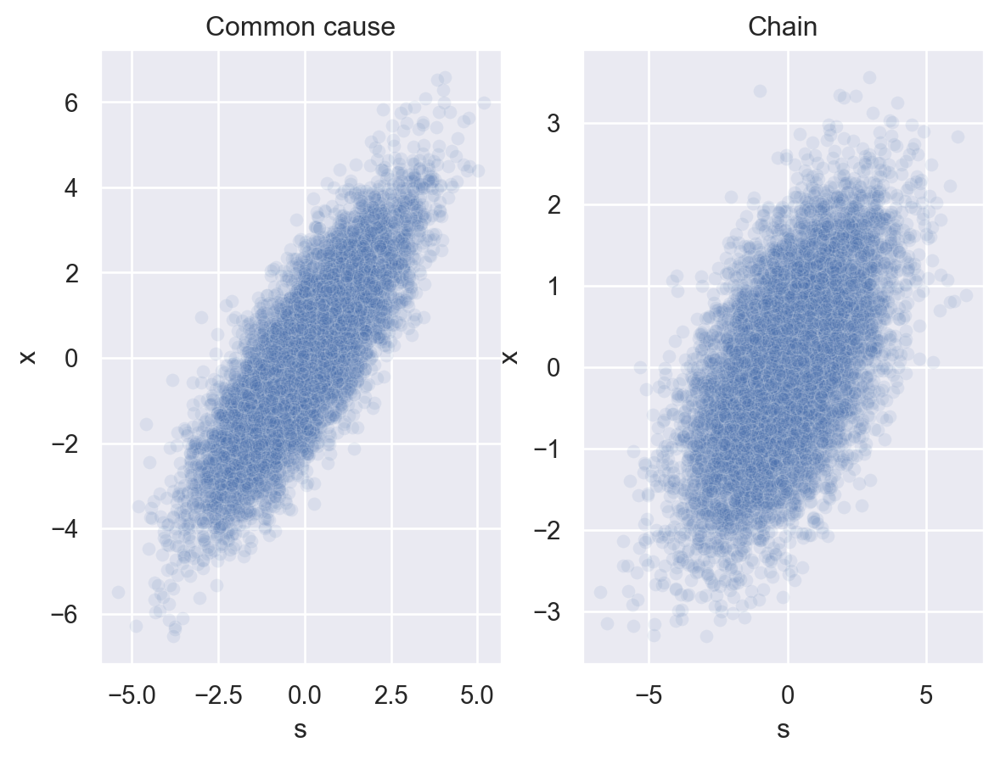

import numpy as np
n_samples = 10000
# Common cause
z_mu = 0
sd = 1
z_samples_cc = np.zeros(n_samples)
s_samples_cc = np.zeros(n_samples)
x_samples_cc = np.zeros(n_samples)
for i in range(n_samples):
z_samples_cc[i] = np.random.normal(z_mu, sd)
s_samples_cc[i] = np.random.normal(z_samples_cc[i], sd)
x_samples_cc[i] = np.random.normal(s_samples_cc[i], sd)
# Chain
x_mu = 0
z_samples_chain = np.zeros(n_samples)
s_samples_chain = np.zeros(n_samples)
x_samples_chain = np.zeros(n_samples)
for i in range(n_samples):
x_samples_chain[i] = np.random.normal(x_mu, sd)
z_samples_chain[i] = np.random.normal(x_samples_chain[i], sd)
s_samples_chain[i] = np.random.normal(z_samples_chain[i], sd)10 Causal inference
The world is full of weird and interesting relationships. Like this one.
Which of these weird relationships are causal relationships and how can we tell? (Does cutting back on margarine reduce your chances of divorce? Probably not.)
Causal inference is, in fact, a major area of research in statistics and machine learning. But we’ll just focus on the question of how people decide what causes what.
We’ll use a computational framework for making optimal probabilistic causal judgments called Bayesian networks, or Bayes nets for short. Comparing people’s judgments to Bayes net predictions allows us to see how optimal (or not) people are. Additionally, as we’ll see, Bayes nets are well suited for intervention, which is one way that people learn about causes.
10.1 Bayes nets ➡️
A Bayes net is a graph that describes the dependencies between all the variables in a situation.
For example, let’s make a Bayes net for the problem in Chapter 5 of inferring the bias of a coin. In that problem, there were three key variables: the bias \(\theta\), the total number of flips \(n\), and the number of heads \(k\). We can represent this as a Bayes net.
In Bayes nets, shaded notes represent variables that are known or observed, and unshaded nodes represent variables that are unknown. We know how many times the coin was flipped and came up heads, but we don’t directly know the bias \(\theta\).
We could extend this Bayes net to capture the generalization problem of predicting the outcome of the next coin flip \(x\).

A complete Bayes net also specifies a probability distribution for each variable. In the example above, \(k\) is a function of \(\theta\) and \(n\). As we learned in Chapter 5, this is a Binomial distribution. We also need to specify a prior probability over any unknown variables, like \(\theta\). Previously we assumed it was distributed according to a Beta distribution. \(x\) is just a single coin flip – it’s a special case of a Binomial distribution called a Bernoulli distribution in which \(n = 1\). To sum up:
- \(\theta \sim \text{Beta}(\alpha, \beta)\)
- \(k \sim \text{Binomial}(n,\theta)\)
- \(x \sim \text{Binomial}(n=1, \theta)\)
10.2 Causal intervention ü™ö
Consider the following two Bayes nets.
To be concrete, let’s say that variables \(s\) and \(x\) represent levels of hormones sonin and xanthan, respectively. Variable \(z\) is an unknown variable.
The common cause network is so-called because sonin (\(s\)) and xanthan (\(x\)) are both causally dependent on \(z\). The chain network is so-called because all the variables form a causal chain from \(s\) to \(x\) to \(z\). (Note the directions of the arrows in the two Bayes nets.)
Let’s see what kind of data these Bayes nets produce. Let’s assume that each root node of a network (\(z\) in the common cause, \(x\) in the chain) follows a normal distribution with mean 0 and SD 1. Each link in a network follows a normal distribution with mean equal to the value of its parent node and SD 1.
Because \(z\) represents an unknown variable, let’s plot just \(s\) and \(x\).
import matplotlib.pyplot as plt
fig, (ax1, ax2) = plt.subplots(1,2)
ax1.scatter(s_samples_cc, x_samples_cc, alpha = 0.1)
ax1.set_xlabel("s")
ax1.set_ylabel("x")
ax1.set_title("Common cause")
ax2.scatter(s_samples_chain, x_samples_chain, alpha = 0.1)
ax2.set_xlabel("s")
ax2.set_title("Chain")
plt.show()
Clearly, the data isn’t identical in the two cases, but data generated by both Bayes nets results in a strong positive correlation between \(s\) and \(x\).
Imagine you didn’t know how this data was generated and you just got one of these plots. Could you use it to tell whether it was produced by a common cause structure or a chain structure?
Sorry, but no. üòî Just knowing the data are positively correlated doesn‚Äôt give you enough information to figure out how \(s\) and \(x\) are causally related.
But what if you could manipulate the variables? That is, what if you could intervene on sonin levels and see what effect it had on xanthan levels?
- If you increase the sonin levels üìà and the xanthan levels also increase üìà, then the causal structure must be a chain.
- If you increase the sonin levels üìà and the xanthan levels don‚Äôt change ‚ùå, then the causal structure can‚Äôt be a chain (and therefore must be a common cause, because that‚Äôs the only other option we‚Äôre considering).
10.2.1 Graph surgery
This intuition can be illustrated visually on the Bayes nets by performing “surgery” on the graphs. It works like this:
- Remove all incoming connections to the variable you’re intervening on.
- If there’s still a path between the variable you intervened on and another variable, then you should still expect those variables to be related.
Let’s apply this idea to our common cause and chain Bayes nets.

After intervening on sonin levels (\(s\)), we remove the connection to \(s\) in the common cause network, but no connections in the chain network. The resulting Bayes nets show why we should expect to see a resulting change in xanthan for the chain, but not the common cause.
10.2.2 Do people intuitively understand the logic of casual intervention?
A study by Michael Waldmann and York Hagmayer presented people with either the common cause or the chain structure. They were told that sonin and xanthan were hormone levels in chimps and they got some example data that allowed them to learn that the hormone levels were positively correlated.
Then they were either assigned to a doing or seeing condition. People in the doing condition were asked to imagine that 20 chimps had their sonin levels raised (or lowered). They then predicted how many of the chimps would have elevated xanthan levels. People in the seeing condition got essentially the same information but just learned that the chimps’ sonin levels were high (not that it had been intentionally raised).
Average results and model predictions are below.

People’s judgments mostly followed those of the Bayes net model predictions. In the common cause case, when the sonin levels are artificially raised, the relationship between sonin and xanthan is decoupled, so the model reverts to a base rate prediction about xanthan levels (and so did people, for the most part). But when just observing elevated sonin levels, the model should expect the positive relationship to hold.
In the chain case, the predictions are the same for seeing or doing, because intervening doesn’t change anything about the relationship between sonin and xanthan. People’s judgments indicate that they understood this.
10.3 Causal structure and strength üèóüí™
Bayes nets can also account for how people judge the strength of evidence for a causal relationship after seeing some data. This was the idea that Tom Griffiths and Josh Tenenbaum explored in a 2005 computational study.
Here’s the basic problem they considered. Suppose researchers perform an experiment with rats to test whether a drug causes a gene to be expressed. A control group of rats doesn’t get the injection and the experimental group does. They record the number of rats in each group that express the gene.
Here are some possible results from an experiment with 8 rats in each group. The table shows how many rats in each group expressed the gene.
| Control üêÄ | Experimental üêÄ |
|---|---|
| 6/8 üߨ | 8/8 üߨ |
| 4/8 üߨ | 6/8 üߨ |
| 2/8 üߨ | 4/8 üߨ |
| 0/8 üߨ | 2/8 üߨ |
In each of these hypothetical experiments, how strongly would you say that the drug causes the gene to be expressed?
These are a few of the cases that were included in an experiment conducted by Marc Buehner and Patricia Cheng. Here’s the full set of averaged human results.

Focusing just on the cases in the table, on average, people judged that the drug was less likely to have a causal effect on the gene as the total number of rats expressing the gene decreased, even when the difference in number of rats expressing the gene between conditions was held constant.
10.3.1 The causal support model
Maybe people reason about these problems by performing a kind of model selection between the two Bayes nets below.

These Bayes nets each have three variables: an effect \(E\), a cause \(C\), and a background cause \(B\). For our problem, the effect and cause refer to the gene and the drug. The inclusion of the background cause is to account for unknown factors that might cause the gene to be expressed without the drug.
The problem people are faced with is deciding which of these two models is best supported by the data \(D\) – the number of times the effect occurred with and without the potential cause.
This can be done with Bayesian inference:
\[ P(\text{Graph } i) \propto P(D|\text{Graph } i) P(\text{Graph } i) \]
Because there are only two possible networks, we can compute the relative evidence for one Bayes net over the other as a ratio. We can then take the log of the expression to simplify it:
\[ \log \frac{P(\text{Graph } 1|D)}{P(\text{Graph } 0|D)} = \log \frac{P(D | \text{Graph } 1)}{P(D | \text{Graph } 0)} + \log \frac{P(\text{Graph } 1)}{P(\text{Graph } 0)} \]
Regardless of what prior probabilities we assign to the two graphs, the relative evidence for one graph over the other is entirely determined by the log-likelihood ratio. This is defined as causal support: \(\log \frac{P(D | \text{Graph } 1)}{P(D | \text{Graph } 0)}\).
Computing \(P(D | \text{Graph } 1)\) requires fully specifying the Bayes net. We’ll assume that \(P(E|B) = w_0\) and \(P(E|C) = w_1\). When both \(B\) and \(C\) are present, we’ll assume they contribute independently to causing \(E\), and therefore operate like a probabilistic OR function:
\[ P(e^+|b,c; w_o, w_1) = 1 - (1-w_0)^b (1-w_1)^c \]
Here, when the B or C are present, \(b\) and \(c\) are set to 1, and when they are absent, \(b\) and \(c\) are set to 0.
The likelihood for Graph 1 is therefore
\[ P(D | w_0, w_1, \text{Graph } 1) = \prod_{e,c} P(e|b^+,c; w_o, w_1)^{N(e,c)} \]
where the product is over the possible settings of \(e\) and \(c\) (effect absent/cause absent, effect absent/cause present, …) and the \(N(e,c)\) values are counts of times that these outcomes happened in the data \(D\).
Here’s a function to compute this.
def compute_likelihood(data, w0, w1, graph):
'''Returns likelihood of data for a given graph
Parameters:
data (list): observation counts in this order:
N(c-,e-), N(c-,e+), N(c+,e-), N(c+,e+)
w0 (float): probability of background cause producing effect
w1 (float): probability of cause of interest producing effect
graph (int): 0 (Graph 0) or 1 (Graph 1)
Returns:
(float): probability of data
'''
if graph == 0:
# e-
p = (1-w0)**(data[0]+data[2])
# e+
p = p * w0**(data[1]+data[3])
elif graph == 1:
# c-, e-
p = (1-w0)**data[0]
# c-, e+
p = p * w0**data[1]
# c+, e-
p = p * (1 - (w0 + w1 - w0*w1))**data[2]
# c+, e+
p = p * (w0 + w1 - w0*w1)**data[3]
else:
# error!
return(0)
return(p)Causal support doesn’t actually depend directly on the parameters \(w_0\) and \(w_1\). The reason is that we ultimately don’t care what the values of these parameters are because we just want to draw an inference at a higher level about the best-fitting Bayes net.
Mathematically speaking, \(w_0\) and \(w_1\) are averaged out of the model, an idea we first saw in Chapter 3. We can accomplish this using Monte Carlo approximation, introduced in Chapter 8.
def estimate_likelihood(graph_number, data):
'''Returns an estimate of the probability of observing the data
under the specified graph using Monte Carlo estimation.
Parameters:
graph_number (int): either 0 (Graph 0) or 1 (Graph 1)
data (list): observation counts in this order:
N(c-,e-), N(c-,e+), N(c+,e-), N(c+,e+)
Returns:
(float): probability of observing data
'''
from numpy.random import default_rng
n_samples = 5000
rng = default_rng(2022)
mc_samples = np.zeros(n_samples)
for i in range(n_samples):
# Sample values for w0 and w1 from a uniform distribution
w0 = rng.random()
w1 = rng.random()
mc_samples[i] = compute_likelihood(data, w0, w1, graph_number)
return(1/n_samples * np.sum(mc_samples))Finally, let’s put it all together by writing a function that computes causal support.
def causal_support(data):
'''Returns a causal support value for a given data set.
Causal support is a measure of how strongly a data
set indicates that there is evidence for a causal
effect.
Parameters:
data (list): observation counts in this order:
N(c-,e-), N(c-,e+), N(c+,e-), N(c+,e+)
Returns:
(float): strength of evidence for causal relationship
'''
import numpy as np
return (np.log(estimate_likelihood(1,data=data) /
estimate_likelihood(0,data=data)))Now let’s see what the model predicts for the four cases we considered earlier.
causal_support_predictions = [causal_support([2,6,0,8]),
causal_support([4,4,2,6]),
causal_support([6,2,4,4]),
causal_support([8,0,6,2])]
labels = ["6/8, 8/8", "4/8, 6/8", "2/8, 4/8", "0/8, 2/8"]
fig, ax = plt.subplots()
ax.bar(labels, causal_support_predictions)
ax.set_xlabel("Data")
ax.set_ylabel("Model prediction")
plt.show()
The labels on the x-axis indicate the control condition counts, followed by the experimental condition counts.
You can see that the model’s predictions largely follow the pattern in the data from earlier. The model favors Graph 1 in the two leftmost cases, is essentially uncertain in the third case, and begins to think the evidence favors no causal relationship in the rightmost case.
The rest of the Griffiths & Tenenbaum paper shows how causal support is able to capture some subtle aspects of people’s causal judgments that other models that don’t incorporate both structure and strength fail to capture.